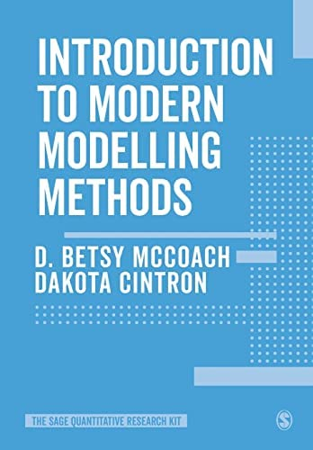
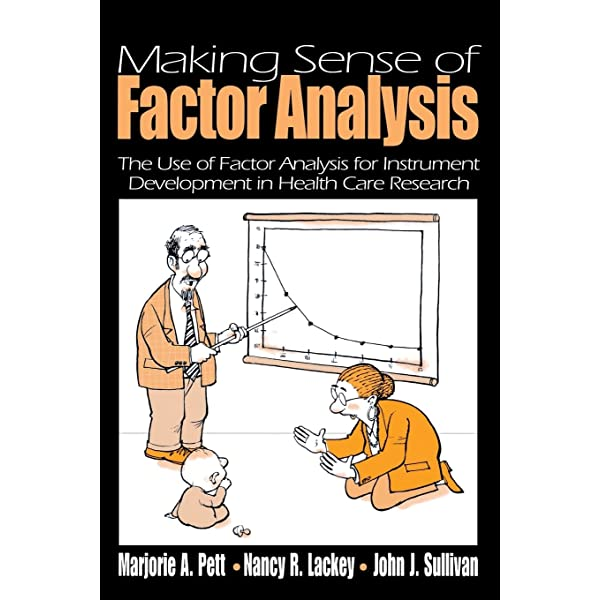
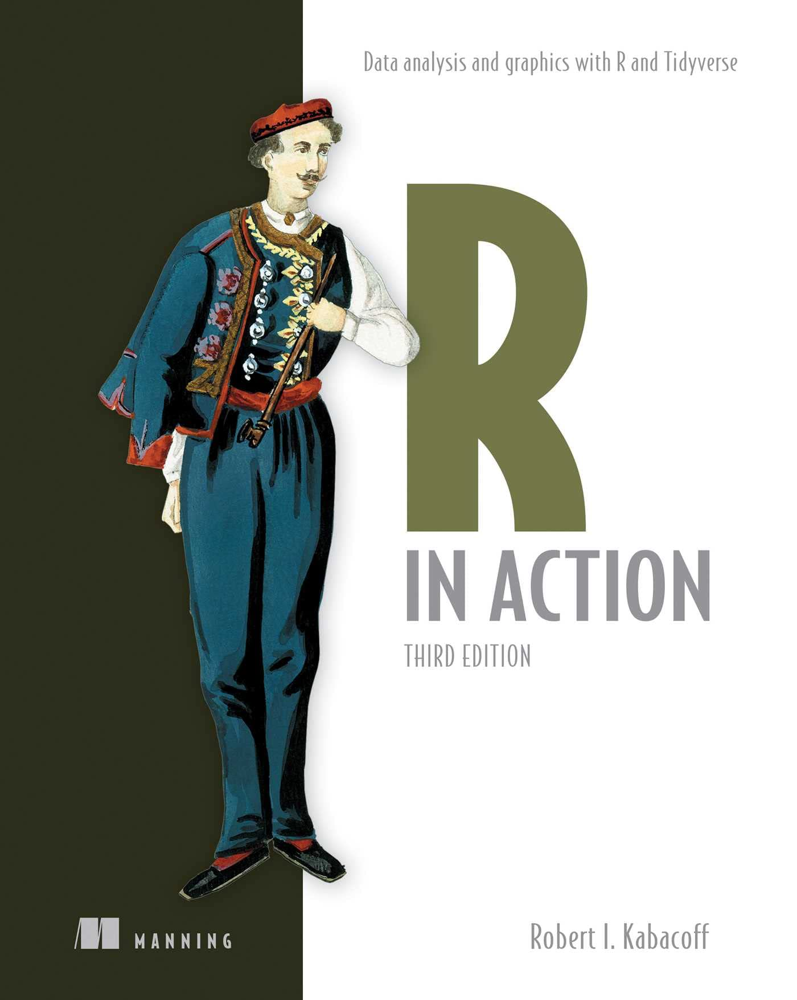

Syllabus
Course Introduction
As a discipline, statistics has given profound tools to the sciences. Statistics is our way of detecting patterns in the noisy universe. Traditionally, psychologists were limited to research questions that could be answered with classical statistical analyses, but without particularly intending to do so, psychologists have found themselves at the cutting age of statistical discovery in the 20th and 21st centuries. This is because we needed to adapt our tools to meet the demands of the complex nature of the phenomena we study. This course will give you the quantitative tools to ask and answer research questions that were impossible to test as recently as a decade ago. Specifically, we will cover the following topics as stand-alone modules:
- Missing Data
- Robust Methods (bootstrapping)
- Process models: Mediation, multiple mediation, mediated moderation, moderated mediation, path analysis
- Non-Gaussian statistics: Generalized Linear Model, Poisson regression, ordinal regression
- Beyond Null Hypothesis Significance Testing (NHST): Structural equation models, Bayesian hypothesis testing
- Dimension reduction: Exploratory factor analysis, principal components analysis (PCA), confirmatory factor analysis (CFA)
- Time-based analyses: Growth curve modeling
- Meta-analysis
I place a strong emphasis on practical application. I believe you are more likely to learn and readily use these analyses in the future if you do them at least once now. Every lecture will have “challenge” demonstrations for you to try the analyses along with me. Every Wednesday there will be a lab going over the material covered that week. The lab assignments will help you build a personal library of example statistical scripts that you will hopefully find useful for years into the future. These lab assignments will be due at the end of class.
Audience
This course is designed for quantitative psychologists but it is relevant to any social and natural scientists studying human behavior.
Prerequisite
The main prerequisite for this course is PSY 503.
NOTE: Students are expected to enroll in PSY 505: Advances in Statistical Methods and Research Practices in Psychology (Spring 2023, T: 11am - 1pm), which constitutes an important complement to this course. You can think of PSY 505 as the required precept time of the week for PSY 503. Please reach out to me if you would like to enroll in PSY 503 but are not able to take PSY 505.
Student Learning Outcomes
At the end of the course, students will be able to:
- Make decisions regarding the most appropriate methods to use in addressing conceptual issues using a given data sets.
- Conduct the analyses using R.
- Write a summary of the results of the analyses.
Office Hours
I will hold weekly office hours (M: 1-3 P.M.; W: 1-2 P.M.)If you need to see me outside of these hours please schedule a meeting: https://calendly.com/jg9120/30min
Textbooks
I strongly recommend the following books:
- McCoach, D. B., & Cintron, D. (2022). Introduction to Modern Modelling Methods (1st edition). SAGE Publications Ltd.

Pett, M. A., Lackey, N. R., & Sullivan, J. (2003). Making Sense of Factor Analysis: The Use of Factor Analysis for Instrument Development in Health Care Research (1st edition). SAGE Publications, Inc.

- Kabacoff, R. I. (2022). R in Action, Third Edition: Data analysis and graphics with R and Tidyverse (3rd edition). Manning.

In addition, I will also assign articles (these will be posted on article)
Attendance Policy
Attendance and active participation in each class is required. 10% of your grade will be based on attendance and participation.
Absences and Late Work
If you need to be absent or submit an assignment late, please let me know as soon as possible. We don’t need to know your personal or medical details. We can be flexible, but please respect my time by turning your assignments in on time whenever possible.
Technology
It is expected that you will bring your laptop to class. Please try to keep it class related.
Assignments
There will be no points associated with any of the assignments this semester. To receive a passing grade (A), all assignments must be turned in.
Stundent Weekly Presentations
Every week (Monday) one of your peers will present an introduction on the method we will be discussing that week, based on the assigned reading for that week. Each presentation will be 30 minutes, and will summarize the method’s uses. After, I will highlight how to use R to apply these methods to your data.
In these presentations, I would like:
A clear overview of the topic: This should include a brief introduction to the topic, highlighting its relevance and importance in psychological research.
A review of key concepts and definitions: The student should provide a summary of the key concepts and definitions related to the topic, including any technical terms that may be unfamiliar to the class.
Examples and applications: To help peers’ understand the practical implications of the topic, you should provide examples and applications of how the topic is used in psychology. This could include your own research or examples from the literature or the materials.
Limitations and challenges: It is important for your peers to understand the limitations and challenges associated with the method. You should discuss any potential issues or difficulties that may arise when using the topic in research, and how these can be addressed.
Future directions: You can discuss any current or future research directions related to the topic, highlighting any areas of debate or uncertainty, if any are relevant.
Questions for discussion: You should provide 3 - 5 questions for discussion. Questions could also cover content from the material you are still unsure about, so one of your peers or I can answer it.
Labs/Exercises
- Each week (Wednesday) we will have one corresponding lab exercise that will be started in class. The purpose is for you to get direct experience conducting the analyses that you learn. Each lab exercise will consist of several questions and will require R (will also accept Python) to answer the questions in a reproducible manner. All lab assignments must be reproducible (i.e., I can replicate the work you did without any errors). You may complete the labs by yourself or working with another person. If you work with another person, your work must obviously be your own.
Ideally, you will finish labs in class. However, if you choose to finish at home, completed labs will be due at 6:00 p.m. on the Friday of that week. Please let me know if you need an extension.
Tutorial
For your final project, you will create a tutorial explaining how to run a particular analysis in R or Python. This will involve finding data or using your own data. The final project gives you a chance to pursue a specific method discussed in class and apply it to your own data. For example, you could choose to write a tutorial on any R package or how to perform a statistical analysis.
Here are some helpful links:
https://quarto.org/docs/websites/
https://crumplab.com/articles/blog/post_887_8_25_22_quartoblog/index.html
There is no final exam
Participation
It is expected that you will come to class every prepared to discuss the material. This means you have read the pre-class materials and watch the pre-class videos.
Grades
At the end of the semester, you will assign yourself the final grade.
Diversity and Inclusion Statement
I would like to create a learning environment for my students that supports a diversity of thoughts, perspectives and experiences, and honors your identities (including race, gender, class, sexuality, religion, ability, SES, etc. ) To help accomplish this:
If you have a name and/or set of pronouns that differ from those that appear in your official Princeton records, please let me know!
If you feel like your performance in the class is being impacted by your experiences outside of class or in class, please bon’t hesitate to come and talk with me. I want to be a resource for you. Remember that you can also submit anonymous feedback (which will lead to me making a general announcement to the class, if necessary to address your concerns).
I (like many people) am still in the process of learning about diverse perspectives and identities. If something was said in class (by anyone) that made you feel uncomfortable, please talk to me about it. (Again,anonymous feedback is always an option).
Schedule
subject to change